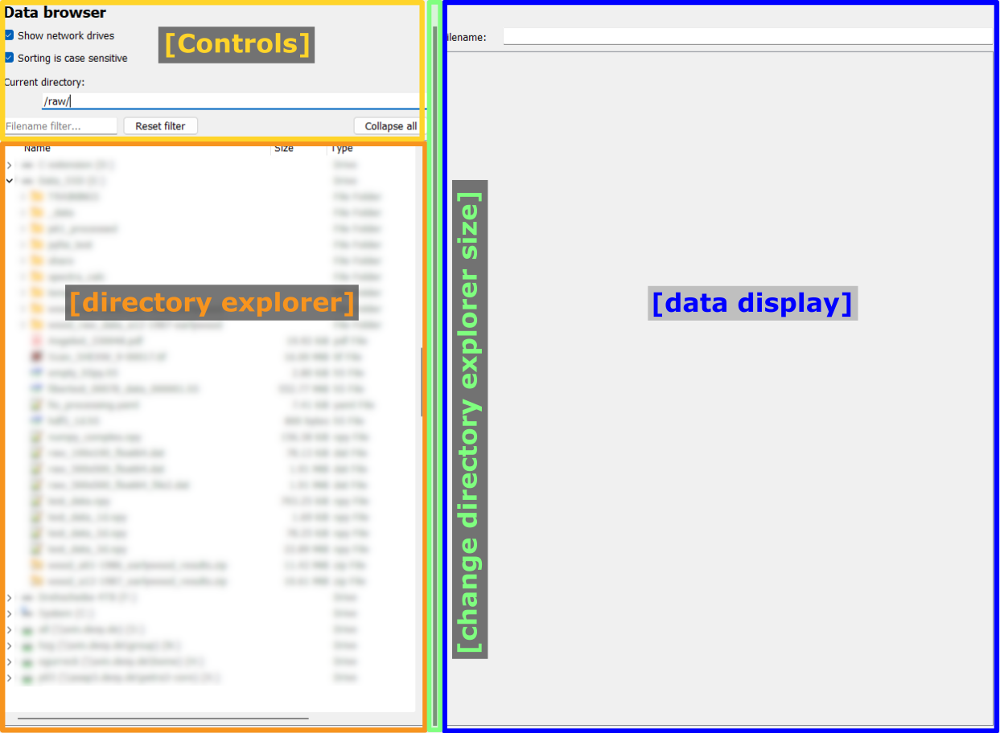
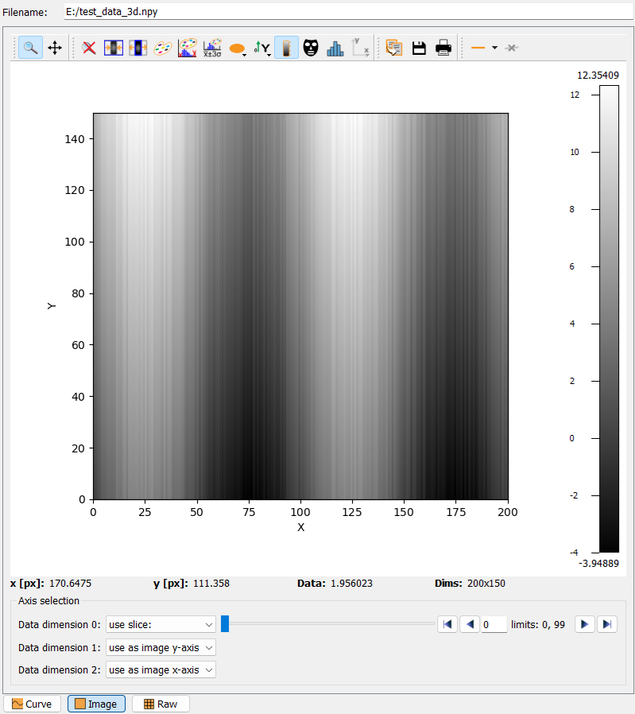
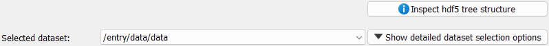
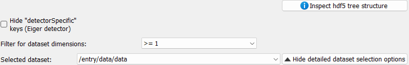
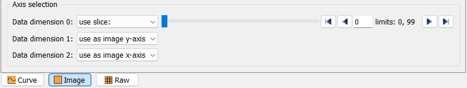
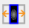

Data browsing frame#
The data browsing frame allows the visualization of one-dimensional and two-dimensional data. The frame is divided in two main parts: On the left, a directory explorer allows to browse the full file system and select files. On the right side, a data display allows to visualize data.
Files are selected by double-clicking on the respective file in the directory. For raw images, an additional selection widget to specify the data settings will be shown. Similarly, for hdf5 files, an additional selection widget to select the dataset in the file will be shown.
{kind=link}
In the screenshot above, the data display is empty as no data has been selected. An example will be shown in the following sections.
The width of the directory explorer widget can be adjusted by using the dark grey handle between the two main widgets, to reduce or to enlarge the directory explorer, respectively. The draggable handle is highlighted with the green frame in the screenshot above.
Warning
The two main widgets have a defined minimum size. If the user drags the splitter further, the respective widget will be hidden. It can be enlarged again by capturing and dragging the dark slider from the edge towards the center.
Controls#
The controls are located on the left, above the directory explorer. Selecting or deselecting an option will directly update the directory explorer.
The options are:
Show network drives
This option allows to show or hide linked network drives in the explorer view.
Sorting is case sensitive
This option toggles case sensitive sorting. If enabled, lowercase and uppercase names will be sorted and displayed separately.
Directory explorer#
The directory explorer is used to select the data to be displayed. The exact look and feel will depend on the used operating system and might be different from the screenshots shown here.
A single click on an item will just highlight the item but will otherwise be ignored. Double-clicking on a folder (or the arrow next to a folder) will expand or collapse the folder, depending on the folder’s current state. Double-clicking on a file will instruct pydidas to open the selected file. If the data format is readable and the file contains two-dimensional data, the content will be displayed in the ImageView widget. In case of hdf5 files, an additional selection field will be shown to select the data frame.
Data display#
The data display widget is shown on the right with the default 2D image view for multi-dimensional data.
{kind=link}
Key elements are:
The filename display at the top: This widget shows the full path of the opened file.
Selection widgets for raw images and hdf5 files: These widgets allow to select the data settings for raw images and the dataset for hdf5 files.
The visualization widget: The selected data is displayed here.
The slice selection widget: Select the slicing in multi-dimensional datasets to select a two-dimensional slice for visualization.
The display modality selection: Select how to display the data.
Details for all elements are given below.
Note
The data display cannot process any metadata like axis labels or ranges. Only the raw data is displayed and only indices can be used to select.
The hdf5 data selection widget#
The hdf5 data selection widget is shown below.
In the minimized view, it allows to open a window to display the hdf5 file structure (Hdf5 Browser Window), and a combo box to select the dataset to display. An additional button allows to show more dataset filter options. The full widget with all filter options is shown below:
The first row allows the user to select dataset filters for specific names. For example, the Eiger detector master file has a number of datasets for detector specific settings like offsets and calibrations for the different modules. If the respective box is ticked, these datasets will not be shown in the drop-down list. Additional filters for datasets can be set on their and minimum data dimension. Any changes to the filters will update the list of filtered datasets immediately.
To select a dataset, simply select the corresponding hdf5 dataset key from the drop-down list of the combo box. This will update the selection of the data frame.
Browsing multi-dimensional datasets uses the slice selection widget, which will be explained below.
The raw data selection widget#
Importing raw data files requires an additional selection of data type, image shape and header length (the header length is given in bytes). Settings all these values allows to correctly decode raw images. The respective widget is shown below:
Trying to decode raw data with wrong settings raises a warning message if the data cannot be imported.
A checkbox with Automatically load files with these settings allows to automatically apply these settings to a series of files with the same settings.
The Hide detailed options button allows to minimize the widget to a minimal size to increase the available space for the data display.
Display modality and slice selection#
At the bottom of the data display widget, the display modality and slice selection widgets allow to define how the data is displayed and which slice is shown.
An exemplary view is shown below:
Depending on the data dimensionality, the modality selection will show different options:
Curve: Display a one-dimensional slice of the data as a line plot.
Image: Display a two-dimensional slice of the data as an image.
Raw: Display the raw data as a table.
The axis selection is required to specify which information to plot. For a curve view, one data dimension can be specified as curve y. The other axes will show a use slice option and a slider to select the slice to be plotted. For an image view, two axes can be selected to use as image y-axis and use as image x-axis, respectively. The other axes will show a use slice option and a slider. Similarly, for the raw view, two axes can be selected to use as row and use as column, respectively.
2D image view#
The PydidasPlot2d is a
subclassed silx Plot2d
with additional features useful in pydidas.

- The menu
The menu bar allows access to all generic silx and additional pydidas functionality. The detailed menu icons and actions are described below in the menu entries description.
- The image display
This widget shows the image data. Depending on the zoom level, this is either the full image or a sub-region.
- The colorbar
The colorbar shows the reference for the used colormap to map data levels to colors.
- The position information
This widget displays the coordinates and data values of the data under the mouse cursor.
Two-dimensional plots are presented in a silx Plot2D widget. The toolbar options will be explained in detail below. Moving the mouse over the canvas will update the labels for x/y position and data value at the bottom of the canvas. Note that the x and y axis positions for each pixel are defined at the pixel center and the given values must be treated carefully with respect to the pixel shape, especially for coarse pixels.
Tip
The scaling of the results can be achieved by modifying the colormap settings.
Menu icon descriptions#
The following functionality is available through the toolbar icons:
menu icon |
description |
|---|---|

|
Zoom mode: clicking with the mouse and dragging spans a new selection of the data to be visualized. |

|
Panning mode: clicking with the mouse and dragging moves the data on the canvas. |

|
Unzoom: Reset the display region to the full data. |

|
Match canvas: Set the aspect ratio to 1 and match the canvas size to the data to allow a tight fit. |
|  | Expand canvas: Reset the canvas size to take up all available space. This option does also change the data aspect to make use of the full canvas. |

|
Open the colormap editor. This button opens a window with selections for the colormap and scaling of the displayed minimum and maximum values. |

|
Crop histogram outliers: Calculate the histogram of the image and set the colormap to ignore the low x% and the top *y% of the image histogram. The levels of x and y can be adjusted in the pydidas user settings. |

|
Autoscale the colormap to the image mean value +/- 3 standard deviations. |

|
This action allows to control the aspect of the displayed data and allows to stretch the data to fill the available canvas or keep its original aspect ratio. |

|
Control the position of the origin in the image: Select between the top left and bottom left corner. |

|
Display or hide the colorbar on the drawing canvas. |

|
Mask tools: This button opens an additional widget at the bottom of the canvas with tools for importing or setting a mask to mask certain data regions. |

|
Set coordinate system: This button will open a submenu which allows to
select the coordinate system (cartesian or cylindrical). Note that the
cylindrical coordinate system use the global |

|
Get information for selected datapoint: This button will allow the user to click on a point in the image and show a window with additional information about this point (specifically: all indices / data values). |

|
Copy the currently visible figure to the clipboard. This will only copy the main figure and not the colorbar. |

|
Save the currently loaded full data to file, ignoring any zooming. This function will open a dialogue to select the file type and filename. Depending on the selected file type, the colormap and scaling will be retained (e.g. for png export) or ignored (e.g. tiff export). |

|
Print the currently visible figure. This will print only the data visible on the canvas and it will retain colormap and scaling settings. |

|
Create and delete line profiles. This function allows the selection and editing of line profiles. The line profiles are shown in the histograms plots for the vertical and horizontal, respectively. |